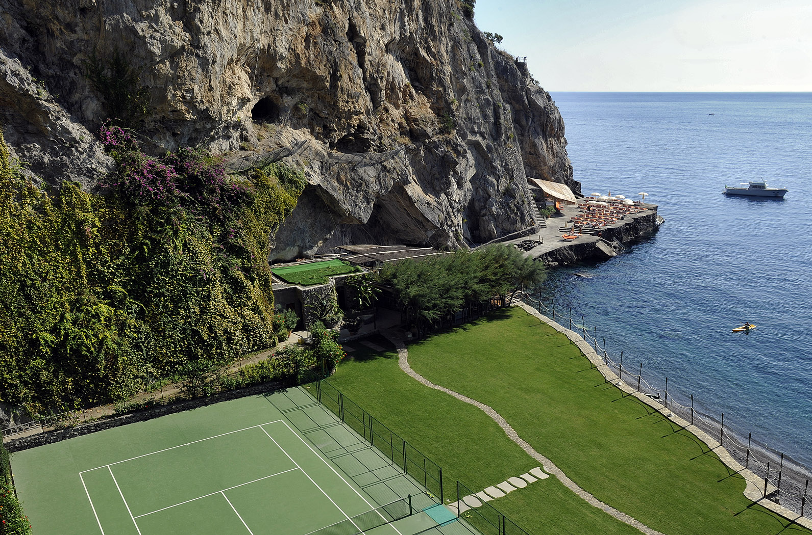

Carved into the cliffs near Positano — the classic, done properly, and home to the #1 hotel tennis court in the world on my list.
Il San Pietro shows up on more of my lists than almost any hotel in the world. It's #1 in my ranking of hotel tennis courts — a clay court blasted into the cliffside, with the Amalfi coastline as the backdrop, my pick as reason enough to stay. It's #06 in The Fifteen, my honeymoon shortlist, where I call it "the classic, done properly." And it anchors the Amalfi Coast section of my featured Italy page.
The property is carved into the cliffs just outside Positano, with Michelin-starred dining and a private beach club at the bottom of the rock — one of my personal favorites on the entire coast, and a Fora Reserve property in my partner book.
The distinction from Le Sirenuse matters: this is cliffside seclusion rather than in-town energy. You take the shuttle into Positano when you want the scene, and retreat to your own stretch of cliff when you don't.

The #1 hotel tennis court in the world. A clay court blasted into the cliffside, the Amalfi coastline stretching out as the backdrop — reason enough to stay, and I mean that literally.
Michelin-starred dining. On property, over the water — the coast's best food-with-a-view pairing.
The private beach club. An elevator through the rock to your own slice of the Tyrrhenian — no Positano beach crowds.
Honeymoon pedigree. It made The Fifteen — the shortlist of honeymoon hotels I'd book anywhere in the world — as the classic, done properly.
It's outside Positano proper, by design. Seclusion is the product. If you want the town at your doorstep, that's Le Sirenuse — my Italy page compares the coast's icons.
Book the court like you book the room. One clay court, high demand — I arrange court time and can bring in pros through my LUX Tennis partnership.
Peak season sells out far ahead. This is one of the hardest confirmations on the coast — the earlier we start, the better.
The classic, done properly — and the only hotel where I'd call the tennis court reason enough to stay.
Rates through me are identical to booking direct — the perks are not. As a Fora advisor, my clients receive a space-available upgrade, daily breakfast, and a hotel credit — plus my direct line to the team on property before and during your stay.
Check Availability